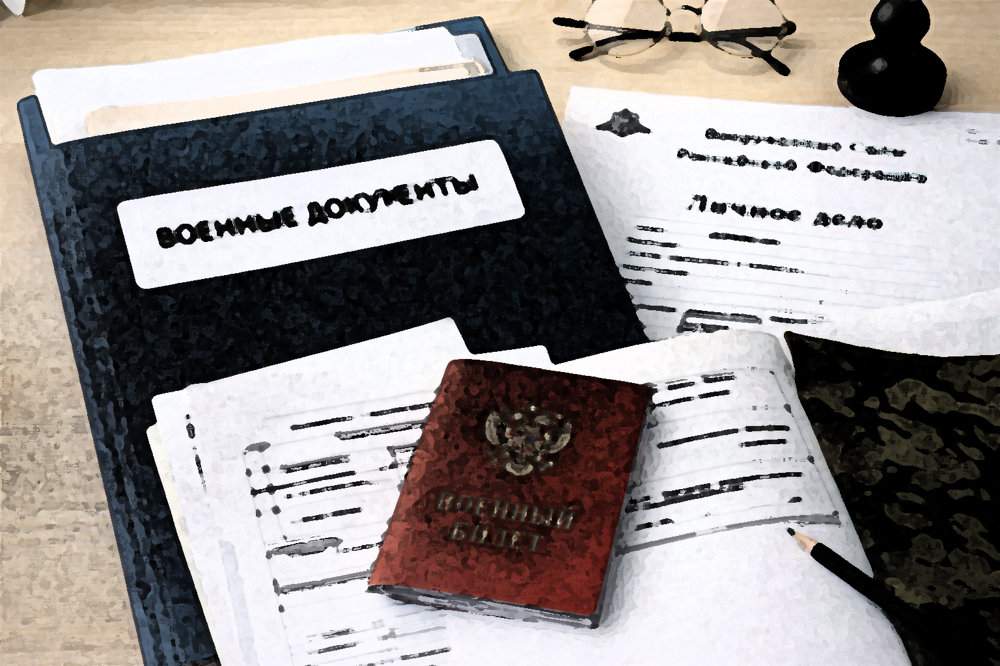
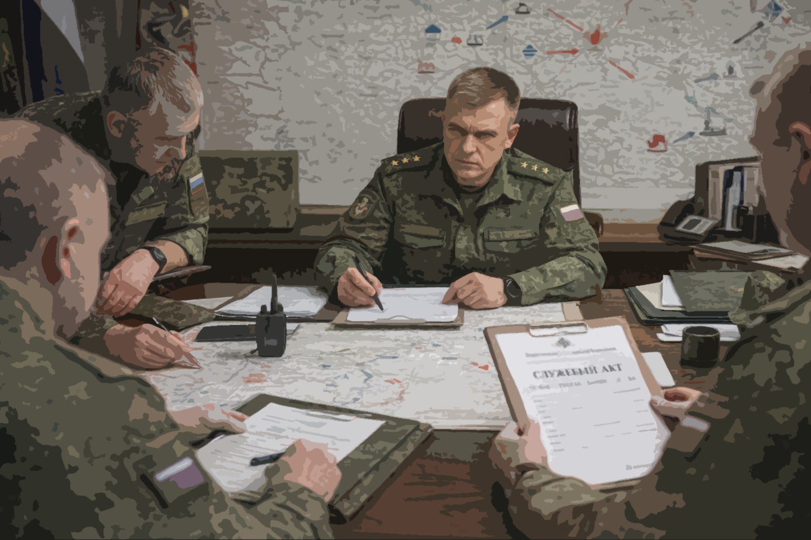
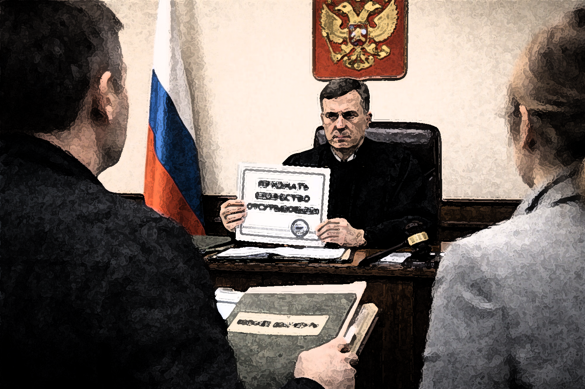

БП и БО на СВО: юридический алгоритм для семьи военнослужащего
← К архивуДата:

Когда военнослужащий, участвующий в специальной военной операции, перестает выходить на связь, семья почти всегда сталкивается с состоянием полной неопределенности. В бытовом языке чаще всего используется формулировка «нет связи» или «пропал». Однако в юридическом смысле такие выражения не имеют значения до тех пор, пока ситуация не зафиксирована документально. Российское законодательство и военная система учета используют конкретные правовые статусы, которые определяют дальнейшие действия государства и семьи.
Ключевыми понятиями являются статус «пропавший без вести» (БП) и статус «безвестно отсутствующий» (БО). Несмотря на внешнее сходство, эти статусы относятся к разным уровням правовой системы. БП — это служебный статус внутри военной структуры, а БО — судебный статус, который устанавливается гражданским судом. Понимание этой разницы критически важно, поскольку именно она определяет порядок оформления документов, возможность получения выплат и сроки юридических процедур.
Что означает статус БП
Статус «пропавший без вести» устанавливается внутри системы Министерства обороны. Он применяется в тех случаях, когда военнослужащий не вернулся с выполнения боевой задачи и его местонахождение неизвестно. При этом отсутствуют подтверждения гибели или пленения. Такой статус фиксируется документами воинской части и является основанием для начала служебного расследования.
Важно понимать, что статус БП не является признанием смерти. С точки зрения закона военнослужащий продолжает считаться живым. Поэтому многие юридические процедуры, включая наследственные вопросы и часть социальных выплат, на этом этапе невозможны. Однако статус БП играет ключевую роль, поскольку именно он запускает официальную процедуру выяснения обстоятельств исчезновения военнослужащего.

Как воинская часть оформляет статус БП
Когда военнослужащий не возвращается с задания, командование обязано провести служебное расследование. В его рамках анализируются обстоятельства боевого эпизода, опрашиваются сослуживцы, проверяются медицинские учреждения и каналы эвакуации. В некоторых случаях анализируются разведывательные данные и сообщения других подразделений.
Результатом расследования становится служебный акт. На основании этих материалов командир может издать приказ о признании военнослужащего пропавшим без вести. Этот приказ является основным документом, подтверждающим статус БП и запускающим дальнейшие процедуры учета и розыска.
Что делать семье
На практике родственники часто ожидают появления информации, однако государственная система реагирует прежде всего на письменные обращения. Именно поэтому ключевой стратегией становится документальная фиксация каждого обращения. Семье рекомендуется направить письменный запрос в воинскую часть с просьбой подтвердить статус военнослужащего и предоставить сведения о розыскных мероприятиях.
Следующим шагом обычно становится обращение в военный комиссариат, который участвует в оформлении документов и взаимодействии с семьей. Если информация не предоставляется или возникают задержки, родственники имеют право обратиться в военную прокуратуру. Деятельность прокуратуры регулируется федеральным законом «О прокуратуре Российской Федерации».
Что означает статус БО
Статус «безвестно отсутствующий» устанавливается исключительно судом. Он регулируется нормами гражданского законодательства, в частности статьей 42 Гражданского кодекса Российской Федерации: ГК РФ статья 42.
Суд может признать гражданина безвестно отсутствующим, если в течение длительного времени отсутствуют сведения о его местонахождении. Для участников боевых действий процедура может применяться в более короткие сроки, поскольку сама природа вооруженного конфликта предполагает повышенный риск гибели или исчезновения.

Как проходит суд
Заявление о признании гражданина безвестно отсутствующим подается в районный суд. Суд рассматривает доказательства, включая документы воинской части, ответы государственных органов и свидетельства о попытках розыска. Если суд приходит к выводу, что местонахождение человека установить невозможно, он выносит решение о признании гражданина безвестно отсутствующим.
Когда признают умершим
Следующим юридическим этапом может стать объявление гражданина умершим. Эта процедура регулируется статьей 45 Гражданского кодекса Российской Федерации: ГК РФ статья 45.
После вступления судебного решения в силу оформляется свидетельство о смерти, что позволяет открыть наследственное дело и получить предусмотренные законом выплаты.
ДНК-идентификация
Если визуальное опознание невозможно, применяется генетическая экспертиза. Она регулируется федеральным законом «О государственной геномной регистрации». У родственников берется буккальный соскоб со слизистой щеки, после чего генетический профиль заносится в государственную базу данных.
Инфографика: путь статусов

Типичная юридическая последовательность выглядит следующим образом: сначала воинская часть фиксирует статус БП, после чего проводится служебное расследование. Если в течение длительного времени сведения о человеке отсутствуют, семья может обратиться в суд для признания его безвестно отсутствующим. Следующим этапом может стать судебное объявление гражданина умершим.
Выплаты семье
Семьи погибших военнослужащих имеют право на ряд компенсаций и социальных выплат. Основные положения регулируются федеральным законом «О денежном довольствии военнослужащих».
К таким выплатам относятся страховые выплаты, единовременные пособия и региональные меры поддержки. Конкретный порядок оформления выплат зависит от статуса военнослужащего и обстоятельств его гибели.
Частые вопросы
Через сколько времени можно признать военнослужащего безвестно отсутствующим?
В обычной гражданской практике срок составляет один год, однако в условиях боевых действий суды могут рассматривать такие дела быстрее.
Можно ли получить выплаты при статусе БП?
Большинство выплат оформляется после подтверждения гибели или судебного признания смерти. Статус БП сам по себе таких оснований не дает.
Обязательно ли сдавать ДНК?
Сдача ДНК не является обязательной процедурой, однако она значительно ускоряет процесс идентификации в случае обнаружения неопознанных останков.
Таким образом, система статусов БП и БО представляет собой последовательный юридический механизм, который позволяет государству учитывать обстоятельства исчезновения военнослужащих и обеспечивать права их семей. Понимание этой процедуры помогает родственникам правильно выстраивать взаимодействие с государственными структурами и быстрее проходить необходимые этапы оформления документов.